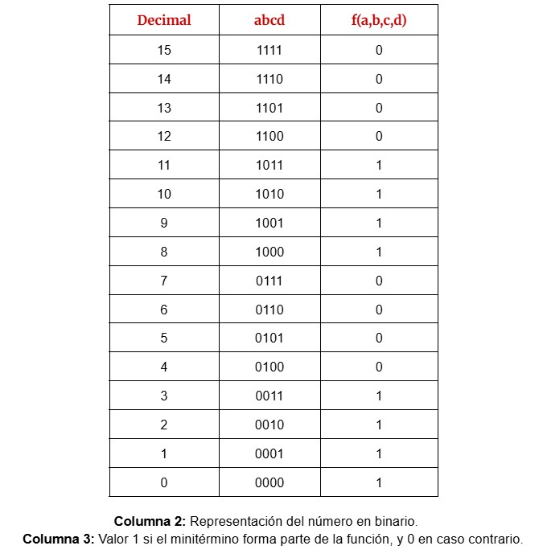
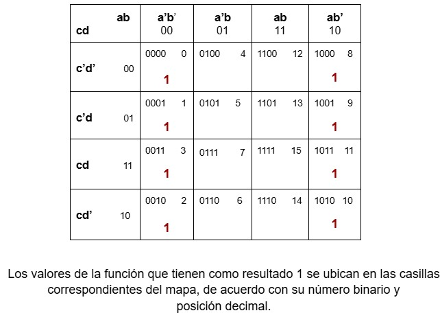
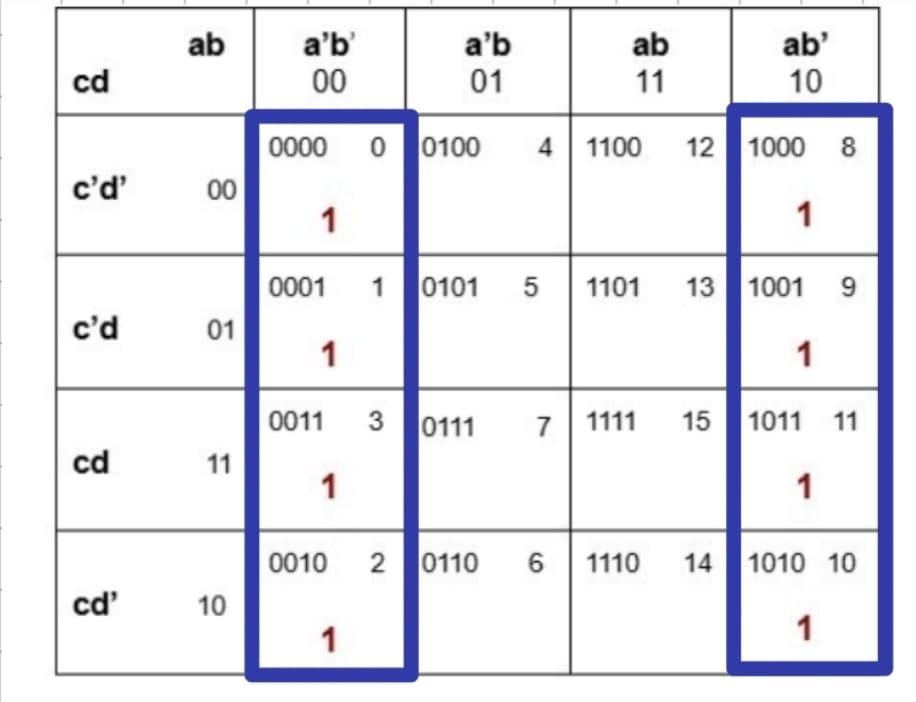
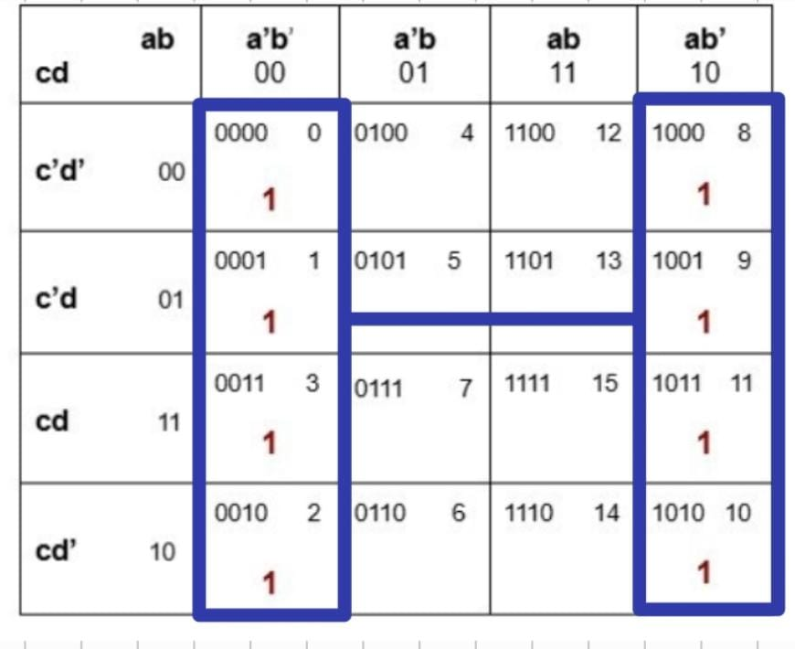

Maurice Karnaugh, nacido en la ciudad de Nueva York, se licenció en el City College de Nueva York y se doctoró en la Universidad de Yale. Fue miembro del personal técnico de los Bell Laboratories de 1952 a 1966 y director de investigación y desarrollo en la división de sistemas federales de AT&T de 1966 a 1970. En 1970 se incorporó a IBM como miembro del personal de investigación.
Karnaugh ha hecho contribuciones fundamentales a la aplicación de técnicas digitales tanto en la computación como en las telecomunicaciones. Sus áreas de interés más recientes incluyen los sistemas expertos y los métodos heurísticos de búsqueda.
(About: Maurice Karnaugh, s. f.)
Diagramas de Karnaugh
El diagrama de Karnaugh es un método gráfico cuyo objetivo es hallar términos que se pueden combinar en el caso de funciones booleanas que dependen de relativamente pocas variables. Este método fue introducido por Maurice Karnaugh en 1953. El diagrama de Karnaugh, o K-diagrama, proporciona un método visual para simplificar una forma normal disyuntiva, pero no son adecuados para automatizar este proceso.
Es importante resaltar tres conceptos que serán aplicados posteriormente en la minimización con K-diagramas en el álgebra de Boole:
1. Minitérmino: Es un término producto donde aparecen todas las variables de la función, con o sin su complemento, una única vez.
2. Maxitérmino: Es un término de suma donde aparecen todas las variables de la función, con o sin su complemento, una única vez.
3. Término canónico: Es toda suma o producto que contenga a todas las variables de una función. Puede combinar minitérminos en una forma normal disyuntiva (sumas) o maxitérminos en una forma normal conmutativa (productos).
Las funciones se acomodan en forma de matriz, representando la función en ella como coordenadas.
(Vázquez, s. f.)
Ejemplo inicial
Minimizar la siguiente expresión: f(a,b,c,d) =∑ (0,1,2,3,8,9,10,11)
Paso 1: Generar la tabla de verdad
Imagen 1: Tabla de verdad

Generación de tabla de verdad
Zaldívar, s. f.
Paso 2: Colocamos los minitérminos en el mapa de Karnaugh
Imagen 2

Mapa de Karnaugh inicial
Zaldívar, s. f.
Paso 3: Agrupamos los miniterminos en función de 2n, donde n=0, 1, 2, 3, 4. Hacemos conjuntos de 4
Imagen 3

Agrupación de términos
Zaldívar, s. f.
Paso 4: Obtener la expresión simplificada
Para cada grupo formado, identificamos qué variables permanecen constantes. Las variables que cambian dentro del grupo se eliminan del término.
- El grupo que abarca los minitérminos 0, 1, 2 y 3 lo representa las variables a'b'.
- El grupo que abarca los minitérminos 8, 9, 10 y 11 lo representa las variables ab'.
Observamos que ambos grupos pueden combinarse formando un solo grupo de 8 celdas (0, 1, 2, 3, 8, 9, 10, 11), lo cual nos permite una simplificación mayor.
Imagen 4

Simplificación final
Zaldívar, s. f.
Para saber qué variable permanece constante en todo ese conjunto, analizamos las combinaciones binarios y notamos que la única constante en todos esos minitérminos es: b'